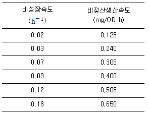
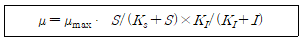
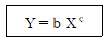

바이오화학제품제조기사 (2017-05-07 기출문제)
1과목: 미생물공학
1. 균체로부터 대부분의 물을 제거하여 세포의 생리 활동을 정지시키는 균주의 보존방법으로 장기간보존이 가능하기 때문에 균주 보관기관에서 널리 사용하고 있는 균주 보관법은?
- 증류수 보존법
- 동결건조 보존법
- 계대배양 보존법
- 유동파라핀 중층 보존법
(정답률: 98%)

2. 그람음성 세균에 비하여 그람양성 세균의 세포벽에 더 많이 들어 있는 성분은?
- 단백질
- 지질다당류
- 펩티도글라이칸
- 지방과 지단백질
(정답률: 96%)
3. 플라스미드의 특성이 아닌 것은?
- 환형의 DNA이다.
- 염색체와 관계없이 독립적으로 복제가 가능하다.
- 숙주세포의 생육에 필수적인 유전자로 구성된다.
- 대부분의 박테리아에 존재하는 염색체 이외의 유전물질이다.
(정답률: 91%)
4. 가장 많은 종류의 항생물질을 생산하는 미생물 속은?
- Bacillus 속
- Cephalosporium 속
- Penicillum 속
- Streptomyces 속
(정답률: 63%)
5. 유기산 중 산업계에서 화학적으로는 생산되지 않고 오직 발효를 통해서만 생산 되는 것은?
- 젖산 (lactic acid)
- 초산 (acetic acid)
- 구연산 (citric acid)
- 푸마르산 (Fumaric acid)
(정답률: 60%)
6. 다음 중 양전하를 갖는 아미노산은?
- 글라이신
- 라이신
- 발린
- 세린
(정답률: 93%)
7. 폭발물의 원료이기도 한 글리세롤은 알코올 발효 시 어떤 물질을 첨가하면 많이 얻을 수 있는가?
- Acetaldehyde
- Potassium chloride
- Sodium chloride
- Sodium bisulfite
(정답률: 75%)
8. 산업용 미생물의 보존 방법 중 보존기간이 가장 짧아 6개월 이내에 보존하는 것은?
- 토양배양
- 동결건조법
- 액체질소에 의한 보존
- 사면 배양기에 의한 보존
(정답률: 75%)
9. 산업용 미생물의 잠재적 생산성의 증가를 위한 유전형질의 변형방법이 아닌 것은?
- 유전자 재조합
- 자연적 돌연변이
- 인위적 돌연변이
- 배양조건의 최적화
(정답률: 84%)
10. 미생물 발효배지를 제조할 때 고려해야 할 사항으로 가장 거리가 먼 것은?
- 배지의 온도
- 미생물의 대사제어
- 대사산물의 생산수율
- 미생물 세포의 생장속도
(정답률: 69%)
11. 일반적인 미생물 배양시 단일 탄소원으로만 사용되기에 가장 적합한 배지성분은?
- 펩톤
- 당밀
- 대두박
- 효모 추출물
(정답률: 90%)
12. 다음 중 Catabolite repression이 가장 잘 나타나는 기질은?
- 섬유소
- 이눌린
- 포도당
- 젖산
(정답률: 80%)
13. 세탁용 바이오 세제에 첨가하는 효소로 다음 중 가장 부적당한 것은?
- 리파아제
- 프로테아제
- 셀룰라아제
- 제한효소
(정답률: 85%)
14. 효소의 국제 분류법에 따른 6개 효소군에 포함되지 않는 것은?
- Oxidoreductase
- Hydrolase
- Lyase
- Polymerase
(정답률: 79%)
15. 유기산과 같은 목적산물의 생산이 에너지 획득대사과정에서 생산될 때, 그 물질의 생산속도는 흔히 Leudeking-Piret식[(1/x)dP/dt = αμ+β]으로 표현된다. 다음 표는 Lactobacillus delbrueckii의 젖산발효 데이터이다. 이 결과를 Leudeking-Piret식으로 해석했을 때, 젖산 생성의 비생산속도의 성장연관(growthassociated) 상수 (α)는 얼마인가? (단, X는 균체농도, P는 산물농도, β는 비성장속도 이다.)

- 0.1
- 1.36
- 3.13
- 5.44
(정답률: 54%)
16. 세포가 한번 분열하는데 30분이 걸린다면 1개의 세포가 2048개로 되는데 걸리는 시간은?
- 4시간30분
- 5시간
- 5시간30분
- 6시간
(정답률: 91%)
17. 정상발효(homo-fermentative) 젖산균이 아닌 것은?
- Peidococcus cerevisiae
- Lactobacillus bulgaricus
- Streptococcus themophilus
- Leuconostoc mesenteroides
(정답률: 59%)
18. 라이신(lysine) 발효를 위하여 Corynebacterium glutamicum을 이용한 균주 개량에서 가장 중요한 것은?
- 항생제 내성균주
- 삼투압 내성균주
- 호모세린(homoserine) 요구성 변이균주
- 이소루이신(isoleucine) 요구성 변이균주
(정답률: 83%)
19. 배양 중에 균체의 농도를 추적하는 것은 발효의 진행을 분석하는데 매우 중요하다. 배지가 soybean meal, corn steep liquor 등을 함유하고 있을 때 균체농도를 측정하는 방법으로 적합하지 않은 것은?
- 탁도 (turbidity) 측정
- Packed cell volume 측정
- Plate count에 의한 CFU 측정
- 균체성분인 ATP, NADH 등을 측정
(정답률: 84%)
20. β-Lactam 항생물질인 penicillin에 대한 설명을 옳은 것은?
- Penicillin G는 산(acid)에 불안정하다.
- Ampicillin은 생합성 penicillin이다.
- Penicillin V는 반합성 penicillin이다.
- 현재 임상적으로 많이 사용되는 것은 Penicillin X이다.
(정답률: 68%)
2과목: 배양공학
21. 2.4 h의 배가시간을 갖고 있는 세균의 비생장 속도는?
- 0.100 h-1
- 0.289 h-1
- 0.417 h-1
- 0.514 h-1
(정답률: 78%)
22. S. cerevisiae는 해당과정을 통하여 다음 식과 같이 포도당으로부터 에탄올을 생산한다. 
YX/ATP가 10.5 g 건조중량/몰 ATP일 때, YX/S는?
- 0.117
- 0.120
- 0.123
- 0.125
(정답률: 49%)
23. 회분식 발효시간은 지체기의 시간과 대수기의 시간을 합한 것과 같다고 할 때 최대세포농도 30 g DCW/L, 초기세포농도 0.5 g DCW/L, 비증식속도 0.75 /h, lag time 5 h 일 때 발효시간은 약 몇 시간인가?
- 5
- 10.5
- 47.5
- 165
(정답률: 61%)
24. 플라스미드를 이용한 유전자가 재조합 세포를 배양할 때 나타나는 유전자불안전성이 아닌 것은?
- 삽입된 플라스미드의 증폭 작용 (plasmid amplification)
- 플라스미드 함유세포와 플라스미드 불포함 세포간의 성장경쟁 (survival competition)
- 분리에 의한 삽입된 유전자의 유실 (segregational loss)
- 구조적 불안정성 (structural instability)
(정답률: 65%)
25. 단백질에 대한 설명으로 옳지 않은 것은?
- 콜레젠은 구조단백질이다.
- 생촉매 역할을 하기도 한다.
- 단백질의 2차구조는 아미노산의 서열에 의하여 결정된다.
- 세포내에서 가장 양이 많은 유기 분자이다.
(정답률: 83%)
26. 스테로이드 지질계에 대한 설명으로 틀린 것은?
- 4개의 고리형 판상 구조이다.
- 미생물을 이용하여 생산한다.
- 코르티손, 에스트로젠 등이 이에 속한다.
- 주로 화학적인 합성으로 완전합성 한다.
(정답률: 80%)
27. 유가식 배양 (Fed-batch culture)에서 준정상상태 (quasi-steady state)란 무엇인가?
- 세포농도와 기질농도가 시간에 따라 변하지 않고 일정하게 유지되는 상태를 말한다.
- 세포량이 일정하지만 배양액 체적이 증가하여 세포 농도가 일정하게 변하는 상태를 말한다.
- 산소 요구량의 변화가 미약하여 용존산소 농도가 일정하게 유지되는 상태를 말한다.
- 임계 희석속도보다 높은 희석속도에 의하여 세출(wash-out)이 일정하게 발생하는 상태를 말한다.
(정답률: 79%)
28. 원핵세포는 그람염색법에 의해 분류되는데 그람염색 시 그람양성을 나타내게 해주는 세포 구조물은?
- 원형질
- 핵물질
- 펩티도글라이칸 층
- 세포막
(정답률: 95%)
29. 식물세포 현탁배양(suspension culture)이 캘러스배양 (callus culture) 보다 우수한 것은?
- 세포의 유전자 안정성(genetic stability)이 높다.
- 세포간 대화(cell to cell communication)가 원활해진다.
- 교반에 의한 영양물질 공급성이 우수하여 생장이 빠르다.
- 호르몬(phytohormone) 요구량이 감소한다.
(정답률: 76%)
30. 지연기가 길어지는 요인은?
- 많은 접종량
- 사멸기 세포의 접종
- 높은 생장인자 농도
- 최적화된 배지 조성
(정답률: 78%)
31. ATP가 ADP로 분해될 때는 에너지가 발생한다. 이로 인하여 세포에서 이루어지는 것은?
- ATP에서 NADP를 합성한다.
- 세포막을 구성하는 반응을 한다.
- 세포의 분해로 생명체가 상실된다.
- 살아있는 세포에서 영양물의 수송, 운동, 생합성을 한다.
(정답률: 96%)
32. 산업적으로 널리 사용되는 무기질소원이 아닌 것은?
- 암모니아
- 아질산나트륨
- 황산암모늄
- 질산암모늄
(정답률: 73%)
33. 고박테리아 (archaebacteria)와 진정박테리아(Eubacteria)의 차이점이 아닌 것은?
- 현미경 관찰로 구분이 확연하다.
- 세포질막의 지질조성이 매우 다르다.
- 진정박테리아는 펩티도글라이칸을 가진다.
- 리보좀 RNA의 염기서열이 서로 다르다.
(정답률: 72%)
34. 미생물의 대사에 관한 설명 중 맞는 것은?
- 효모가 호기성 조건에서 고농도의 포도당이 존재할 경우에 에탄올을 생성하는데 이를 Pasteur effect라고 한다.
- 생체 내 에너지는 주로 ATP에 의하여 저장되었다가 사용되는데, 혐기성 조건에서는 전자전달계에서 생성될 수 없다.
- 효모가 산소에 의하여 대사조절이 이루어지는 것을 Crabtree 효과라고 하는데, phosphofructokinase가 조절효소이다.
- 이화작용은 세포가 화합물을 분해하여 에너지를 얻는 대사이고, 동화작용은 복잡한 화합물을 생합성하는 대사이다.
(정답률: 86%)
35. 세포 배양을 위해 필요한 배지의 성분은 탄소원, 질소원, 산소, 인, 무기염류 등이 있다. 다음의 보기에서 탄소원으로 가장 세포가 이용하기 어려운 것은?
- 포도당
- 과당
- 셀룰로오스
- 전분
(정답률: 83%)
36. 여러 종류의 반응기가 고정화 세포배양에 이용된다. 세포 고정화에 사용되는 지지담체가 약하고 내구성이 떨어질 때 적용하기 힘든 형태는?
- 공기부양(air-lift) 반응기
- 유동층(fluidized-bed) 반응기
- 충전관(packed-column) 반응기
- 탱크교반(stirred-tank)형 반응기
(정답률: 66%)
37. 회분식 세포 배양의 성장형태(growth phase) 에서 생장속도와 사멸속도가 동일한 기간은?
- 지연기(lag phase)
- 지수 성장기(exponential phase)
- 정지기(stationary phase)
- 쇠태기(decline phase)
(정답률: 93%)
38. 세포농도를 간접적으로 측정하려고 할 때 적절하지 않은 것은?
- ATP 농도 측정
- DNA 농도 측정
- 단백질 농도 측정
- mRNA 농도 측정
(정답률: 87%)
39. 생물의약품 생산 공정에서 효모를 유전자 재조합 숙주로 사용할 때의 장점은?
- 생산된 단백질이 세포 내부에 존재하고 높은 농도인 경우는 내포체로 엉김이 생겨 분리공정에 유리하다.
- 타 생명체에 비해 생리학적, 유전학적으로 알려진 것이 가장 많고 유전자 조작이 용이하다.
- 번역 후 수정이 필요 없는 경우에 빠른 생장속도를 이용한 높은 생산성을 얻을 수 있다.
- 간단한 당 첨가반응이 일어나고 안전하다고 여겨지는 목록 (GRAS)에 포함되어 있어 허가받기가 용이하다.
(정답률: 68%)
40. 미생물 배양에 관한 양론을 나타내는 파라미터에 대한 설명으로 틀린 것은?
- YX/ATP 은 ATP 1몰당 생합성되는 바이오메스의 질량을 나타내는 ATP 수율계수이다.
- RQ 란 소비된 산소 1몰당 생성된 CO2의 몰수를 나타내며 호흡율이라고 한다.
- P/O 비는 산소 원자 1몰에서 생성되는 고에너지 인산결합 몰수로 보통 3보 다 크다.
- H/O 비는 소비된 산소 1몰당 방출되는 H+ 이온의 몰수로 보통 4보다 크다.
(정답률: 72%)
3과목: 생물반응공학
41. 효소에 대한 설명 중 틀린 것은?
- 고분자 단백질이다.
- 비단백질 부분과 결합한 복합체 형태의 효소는 완전효소(holoenzyme)라고 한다.
- 다른 분자구조를 지니지만 동일한 반응을 촉매하는 효소는 유사효소(isozyme)라고 한다.
- 비단백질을 지니고 있는 효소의 단백질 부분은 조효소(coenzyme)라고 한다.
(정답률: 79%)
42. 효소의 활성도에 대한 설명으로 옳은 것은?
- 효소는 금속촉매와 같이 고온에서 온도의 증가에 따라 활성이 증가하는 경향을 보인다.
- 효소의 활성은 용액의 pH가 증가할수록 활성도도 증가한다.
- 효소활성의 반감기는 반응온도가 증가할수록 길어진다.
- 효소활성에 대한 최적 pH와 최적 온도는 효소의 종류마다 다르다.
(정답률: 95%)
43. 재순환이 잇는 키모스텟 (chemostat) 연속배양에서 공급액의 유속은 200 L/h이고, 배양용기의 부피는 2000 L이며, 재순환비는 0.5, 재순환액의 농축비는 2 이다. 정상상태에서 이 시스템의 비생장속도 (μ)는?
- 0.025 h-1
- 0.⑤0 h-1
- 0.075 h-1
- 0.100 h-1
(정답률: 53%)
44. 효소반응 후 효소가 부착된 고체입자로부터 효소를 분리해서 재사용할 수 있는 효소 고정화 방법은?
- CM-Cellulose 에 효소를 흡착시킨다.
- Cyanogen bromide 와 반응한 GlassBeads 에 효소를 부착 시킨다.
- Acrylamide 와 효소를 혼합한 후 고분자화 시킨다.
- Glutaraldehyde 로 효소를 가교화한다.
(정답률: 74%)
45. 초기 배지양 600 mL를 사용한 1 L의 연속식 반응기에서 효모 발효를 행하였다. 발효 50시간 후 정상상태에 도달하였고, 샘플분석을 실시한 결과 이 반응은 Monod Model을 따르는 것으로 나타났다. 정상상태에서의 효모의 비증식속도와 정상상태 하에서의 기질 및 균체의 농도가 0.1 g/L 및 5 g/L 이었다면, 배지의 유입 flow rate를 얼마로 해 주어야 이 값들을 얻을 수 있는가?(단, u = 0.5/hr, umax = 0.7/hr)
- 0.04 L/h
- 0.3 L/h
- 0.42 L/h
- 0.5 L/h
(정답률: 39%)
46. 담체에 고정화된 미생물을 이용하는 반응기 중 전단응력에 가장 단단한 담체를 사용해야 하는 반응기는?
- 교반식 반응기
- 충진층 반응기
- 공기부상식 반응기
- 유동층 반응기
(정답률: 73%)
47. 고정화 세포 배양의 장점이 아닌 것은?
- 높은 희석속도에서도 세포의 세출(wash-out)이 없다.
- 높은 세포 농도를 유지할 수 있다.
- 세포를 재사용하여 비용이 절감된다.
- 세포 내 효소 (interacellular enzyme) 와 같은 물질 생산에 적합하다.
(정답률: 61%)
48. 균일상 효소반응속도에 영향을 주는 인자들 중 외부인자 (반응환경) 가 아닌 것은?
- 온도
- 이온강도
- 압력
- 효소의 농도
(정답률: 70%)
49. 효소반응 속도식은 어떻게 얻을 수 있는가?
- 효소의 활성화에너지를 측정함으로써
- 효소반응시 관여하는 ATP 농도를 측정함으로써
- 효소반응으로 인한 단백질 3차 구조의 변화를 측정함으로써
- 효소반응에 의해 생성되는 생성물의 생성율을 측정함으로써
(정답률: 89%)
50. 효소 A 와 효소 B의 기질 S에 대한 Michaelis-Menten 상수 값이 각각 0.1과 0.2 이다. 효소 A와 효소 B의 기질 S에 대한 친화력의 관계를 옳게 나타낸 것은?
- RA > RB
- RA < RB
- RA = RB
- RA = √RB
(정답률: 77%)
51. 회분식 반응기가 키모스텟(chemostat)과 비교하여 공정상 유리한 특성이 아닌 것은?
- 공정의 융통성
- 공정의 신뢰성
- 균주나 유전자 불안전성의 영향이 낮음
- 1차 생성물에 대한 높은 생산성
(정답률: 68%)
52. 미생물의 성장이 모노드식을 따른다고 할 때, 최대비성장속도 μmax 는 0.7 hr-1 이고, KS는 5 g/L로 나타났다. 유속은 200 L/hr 이고 유출류의 기질 농도는 2 g/L이다. 단일 정상상태에서 교반탱크발효조의 부피는 약 몇 L인가? (단, 모노드식은 μ = μmax·S/[Ks+S], μ는 비정상속도, S는 기질 농도이다.)
- 1000리터
- 1400리터
- 1500리터
- 2000리터
(정답률: 45%)
53. 어떤 미생물의 비성장속도 μ는 기질농도 S, 저해농도 I 에 대해 다음의 식으로 표시된다. 다음 중 μ 를 높일 수 있는 방안으로 가장 옳은 것은? (단, Ks는 기질 포화상수이고, KI는 산물 저해상수이다.)

- 연속배양을 한다.
- 미생물을 고정화 한다.
- 기질의 농도를 높여 준다.
- 초기 세포농도를 높게 하여 배양한다.
(정답률: 72%)
54. 촉매를 충진한 고정층 (충전층, PBR)형 반응기의 장점이 아닌 것은?
- 반응기 단위 체적당 고정화 효소 입자의 총질량이 많다.
- 구조가 간단하기 때문에 스케일업(scale-up) 이용이하다.
- 유체의 흐름이 압출(plug flow) 흐름에 가깝다.
- 축 방향으로 기질과 생성물의 농도 분포가 생긴다.
(정답률: 49%)
55. 다음 중 생물반응기의 대규모화를 위한 가장 알맞은 기준이 되는 것은?
- 동일한 기질 농도
- 동일한 물질전달속도
- 동일한 비율의 염기(base) 양
- 동일한 비율의 균 접종(inoculum) 양
(정답률: 64%)
56. 다음은 Michaelis-Menten 효소반응 속도식이다. v = Vm·[S] / (Km+[S]) 여기서 Km에 대한 설명이 아닌 것은?
- Michaelis 상수이다.
- 기질과 효소가 반응하여 기질-효소복합체를 형성하는 가역반응에서 평형상수의 역수와 같다.
- 효소와 대상 기질의 상호작용의 특성을 나타낸다.
- Km 의 값은 반응속도가 최대일 때의 기질농도와 같다.
(정답률: 74%)
57. 다음 중 회분식 반응기에서의 미생물 균체(X)에 대한 물질수지를 잘 나타낸 것은? (단, YX/S : 기질로부터 균체생산으로의 수율, μ: 비증식속도, D: 희석률, t: 시간을 나타낸다.)
- dx/dt = μ*x
- dx/dt = YX/S*μ*X
- dx/dt = YX/S*D
- dx/dt = (μ-D)*X
(정답률: 64%)
58. 비경쟁적 저해 효소반응에서 저해제의 농도가 증가함에 따라 Lineweaver-Berk 도표의 기울기와 y절편은?
- 기울기는 증가하며 y절편도 증가한다.
- 기울기는 일정하며 y절편은 증가한다.
- 기울기는 증가하며 y절편은 일정하다.
- 기울기는 감소하며 y절편은 일정하다.
(정답률: 59%)
59. 액중발효(Liquid fermentation)와 비교하여 고상발효(Solid fermentation)의 장점이 아닌 것은?
- 생성물의 분리용이
- 반응기 내 균질한 발효 조건의 유지가 용이
- 낮은 수분 함량으로 인한 낮은 오염 가능성
- 시설비의 절감
(정답률: 55%)
60. 배지에 포함되어 있는 포자의 농도(n0) = 102 spores/L 이고, 사멸속도(kd) = 1 min-1 이다. 15분간 살균한다고 할 때, 1000L 생물반응기를 이용한 발효 시 실패 확률은 얼마인가?
- 0.03
- 0.39
- 0.86
- 1
(정답률: 39%)
4과목: 생물분리공학
61. 황산암모늄 등의 염(salt)에 의한 단백질의 침전에 대한 설명으로 틀린 것은?
- 보통 1.5 M 이상 고농도의 황산암모늄의 존재는 단백질의 용해도를 떨어뜨리는 염석(salting-out) 효과가 있다.
- 황산암모늄을 이용한 염석(salting-out)을 수행할 때 단백질 침전은 온도가 증가할수록 감소하는 경향이 있다.
- 단백질 침전을 위한 암모늄염의 음이온으로는 –1가 보다는 –2가 음이온이 보다 효과적이다.
- 황산암모늄으로 침전된 단백질은 불안정하여 활성유지가 어려워 장기간 침전상태로 보관하기에는 부적합하다.
(정답률: 53%)
62. 단층(monolayer) 흡착에 근거한 흡착등온식(isotherms)은?
- Langmuir isotherms
- Freundlich isotherms
- BET isotherms
- Linear isotherms
(정답률: 55%)
63. 단백질의 침전공정에서 가장 많이 사용되는 염은?
- NaOH
- (NH4)2SO4
- HCl
- EDTA
(정답률: 86%)
64. 초음파 진동기를 이용하여 세포를 파쇄 할 경우에 대한 설명으로 틀린 것은?
- 초음파 분쇄는 열 발생 문제가 있어서 열에 민감한 효소를 변성시킬 수 있다.
- 그람음성 세균이 그람양성 세균 보다 더 쉽게 깨진다.
- 본체에서 발생된 초음파는 세포 현탁액에 잠겨있는 티타늄 전극에서 파동 에너지가 기계적 에너지로 전환된다.
- 긴 균사체로 된 사상곰팡이 세포 파쇄에 가장 효과적이다.
(정답률: 70%)
65. 다음 중 초임계 추출이 활용될 수 없는 것은?
- 바이러스의 제거
- 잔류 농약 제거
- 탁솔의 정제
- 잔류 유기용매 제거
(정답률: 73%)
66. 어떤 크로마토그래피 칼럼에서 일정 압력을 이용하여 용액을 주입할 때 관찰한 액체의 겉보기 유속(superficial velocity)은 10 mL/min 이다. 이 칼럼 내 공극률(void fraction)이 0.25라면 실제 칼럼 내에서 충진물 사이에서 흐르는 내부유속은 약 몇 mL/min 인가?
- 4
- 10
- 25
- 40
(정답률: 49%)
67. 미생물 제품이나 단백질과 같이 열에 대해 일반적으로 불안정한 물질을 건조하는 주로 사용되는 건조기는?
- 동결 건조기
- 분무 건조기
- 상자형 건조기
- 고주파 가열 건조기
(정답률: 90%)
68. 페니실린 발효액으로부터 이소아밀아세테이트 (isoamyl acetate)를 이용하여 페니실린을 추출 하려 한다. 100mL의 발효액에 10mL의 이소아밀아세테이트를 섞어 pH 3에서 충분히 교반시킨 후 상분리를 거쳐 이소아밀아세테이트 상과 물 상 내의 페니실린 농도를 측정하였더니 각각 5 g/L 와 0.5 g/L 이었다. 이 추출계에서 의 분배계수(partition coefficient)는?
- 0.04
- 0.4
- 10
- 25
(정답률: 48%)
69. 흡착제 단위량 당 흡착된 용질의 양 Y 를 용액내 용질농도 X의 함수로 다음과 같이 나타내는 것은 무슨 식에 해당하는가? (단, b, c 는 상수, X 는 평형상태에서 용액 내 용질농도이다.)

- Fick 식
- Stefan 식
- Langmuir 식
- Freundlich 식
(정답률: 58%)
70. 원심분리, 중력침강 또는 여과 이전에 분리공정의 성능을 개선하기 위해 세포 덩어리를 형성 하는데 이용되는 것은?
- 응고/응집
- 추출
- 침전
- 흡착
(정답률: 85%)
71. 미생물의 배양 특성을 이용하여 목적 미생물을 분리하기 위한 배양 방법으로만 나열된 것은?
- 액체집적 배양, 한전평판 배양
- 액체직접 배양, 계대 배양
- 계대 배양, 한천평판 배양
- 액체직접 배양, 한천평판 배양, 계대 배양
(정답률: 70%)
72. 추출 공정에서 용질이 추출되고 남은 액체를 무엇이라 명명하는가?
- extract
- raffinate
- solute
- solvent
(정답률: 71%)
73. 용질에 대한 막의 배제 계수(rejection coefficient)가 0.75이다. 모액(feed solution) 쪽의 용질 농도가 0.2 M 일 때, 여액(filtrate) 쪽의 용질 농도는?
- 0.01 M
- 0.03 M
- 0.⑤ M
- 0.07 M
(정답률: 60%)
74. 분배계수, K (= C추출용매/C모액)가 3 인 액-액 추출계에서 일정한 부피의 수용성 모액에 대하여 같은 부피의 추출용매를 사용하여 모액 내의 단백질을 추출한다. 전량의 추출용매를 1 회에 사용할 경우에 비하여 반씩 나누어 2 회에 걸쳐 사용했을 때의 총 추출율의 증가는?
- 0.09
- 0.12
- 0.14
- 0.17
(정답률: 36%)
75. 전기영동(Electrophoresis)에서 발생하는 현상이 아닌 것은?
- 마찰력(Frictional force)
- 이완효과(Relaxation effect)
- 지연효과(Retardation effect)
- 농도분극(Concentration polarization)
(정답률: 55%)
76. 여과의 전처리 과정에 주로 쓰이는 방법이 아닌 것은?
- 가열(heating)
- 엉김(coagulation)
- 응집(flocculation)
- 크로마토그래피(chromatography)
(정답률: 66%)
77. 관형 원심분리기가 갖는 장점이 아닌 것은?
- 높은 원심력
- 관의 분해가 용이
- 우수한 수분제거 능력
- 큰 케이크 용량으로 효율 저하 없음
(정답률: 71%)
78. 아미노산에 대한 설명으로 틀린 것은?
- 아미노산은 pH가 낮을 때 양으로 하전 되고, pH가 높을 때는 음으로 하전 된다.
- 등전점의 아미노산은 작용 전기장의 영향으로 이동하지 않고, 용해도는 가장 적어진다.
- L-아미노산의 자연적 산출은 드문 일로, 미생물의 세포벽과 몇 가지 항생 물질에서나 볼 수 있다.
- 아미노산의 짧은 축합 사슬은 폴리펩티드, 긴 사슬은 단백질이라고 한다.
(정답률: 63%)
79. 유용한 미생물을 분리 검색하는 절차로서 가장 적절한 것은?
- 시료채취 → 직접배양 → 순수분리 → 성질검정
- 시료채취 → 순수분리 → 직접배양 → 성질검정
- 순수분리 → 시료채취 → 직접배양 → 성질검정
- 순수분리 → 직접배양 → 시료채취 → 성질검정
(정답률: 68%)
80. 건조 조작에 사용되는 공기의 가열 방식이 아닌 것은?
- 단열식
- 가열식
- 회전식
- 재순환식
(정답률: 63%)
5과목: 생물공학개론
81. 전기영동기법에서 단백질을 계면활성제인 도데실황산나트륨(SDS) 용액에 넣고 끓이면, 단백질은 변성이 일어난다. 3 차원 접힘 구조가 파괴된 단백질이 용액 안에서 어떤 전하를 띠게 되는가?
- 중성
- 양전하
- 음전하
- 고유한 단백질 전하를 그대로 유지한다.
(정답률: 71%)
82. 효소가 기질과 결합하는 활성부위에 기질이 알맞게 자리 잡게 하는 과정은?
- 자연적응
- 유도적응
- 경쟁적응
- 분해적응
(정답률: 84%)
83. 유성생식 양상에 근거하여 진균류를 조상균류(phycomycetes), 자낭균류(ascomycetes), 담자균류(basidiomycetes), 불완전균류(deuteromycetes) 로 분류한다. 이에 대한 설명으로 틀린 것은?
- 조상균류: 조류 같은 진균류이고, 광합성을 하며, 물과 뭍에서 자라는 곰팡이가 이 부류에 속한다.
- 자낭균류: 자낭포자라고 하는 유성표자를 형성하며, 이 포자는 자낭 안에 있다.
- 담자균류: 담자포자에 의해 생식하며, 이 포자는 담자라는 특정한 세포의 줄기에서 생성되고, 버섯이 이 부류에 속한다.
- 불완전균류: 유성생식은 하지 않고, 무성생식만 하는 곰팡이가 이 부류에 속한다.
(정답률: 72%)
84. 유입되는 고형물 비율이 높고 (>30% [v/v]), 분리하고자 하는 물질의 크기가 클 때 효율적이어서 대량의 sewage, sludge 등을 연속적으로 처리하는데 주로 이용되는 원심분리기는?
- Basket centrifuge
- Disc-bowl centrifuge
- Tubular-bowl centrifuge
- Solid-bowl scroll centrifuge
(정답률: 59%)
85. 대장균 액체배양에서 세포 생장을 측정할 단위로 적합하지 않은 방법은?
- 건조중량
- DNA 농도
- Glucose 농도
- 혼탁도
(정답률: 55%)
86. 움직이는 박테리아는 영양소를 찾기 위해 농도가 높은 곳으로 움직이나 독성 물질의 경우 농도가 낮은 곳으로 움직인다. 이를 무엇이라 하는가?
- 화학자극운동
- 섬모반응
- 능동수송
- 집단전이
(정답률: 68%)
87. 특정 DNA 부위를 특이적으로 반복 합성하여 시험관 내에서 원하는 DNA 분자를 증폭시키는 방법은?
- 연결 반응
- 가수분해 반응
- 산화환원 반응
- 중합효소 연쇄반응
(정답률: 86%)
88. 멸균에 사용되는 소독제의 종류와 그 작용 기전이 잘못 연결된 것은?
- 승홍수(HgCl2) - 세포 기능을 저해함
- 에탄올 –세포막을 통과하여 원형질을 저해함
- 차아염소산나트륨 –원형질의 단백질 응고나 변성에 의해서 세포기능을 저해함
- 염화벤잘코늄 –미생물에 필수적인 효소계를 저해함
(정답률: 58%)
89. 핵산의 구성요소가 아닌 것은?
- 오탄당
- 인산기
- 황산기
- 질소염기
(정답률: 86%)
90. 단백질 암호화 서열이 300 개의 base로 구성된 mRNA로부터 합성될 수 있는 단백질의 대략적 인 분자량은? (단, 아미노산 평균분자량은 150 dalton 으로 가정한다.)
- 15,000 dalton
- 18,000 dalton
- 20,000 dalton
- 30,000 dalton
(정답률: 79%)
91. 1 mol의 acetyl-CoA 로부터 시작하여 TCA cycle을 도는 동안 2 mol의 NADH + H+, 1 mol의 FADH2, 1 mol의 ATP가 생성된다. 이것은 결과적으로 몇 mol의 ATP 생성에 기여하는 셈이 되는가?(오류 신고가 접수된 문제입니다. 반드시 정답과 해설을 확인하시기 바랍니다.)
- 1
- 5
- 10
- 12
(정답률: 53%)
92. 혈청의 특징에 대한 설명으로 옳은 것은?
- 값이 싼 배지 성분이다.
- 거품이 거의 생기지 않는다.
- 프라이온의 오염 가능성이 있다.
- 가압살균법으로 멸균이 가능하다.
(정답률: 76%)
93. 품질(보증) 부서 책임자는 시험지시서에 의하여 시험을 지시하여야 하는데 이때 시험지시서에 포함될 항목이 아닌 것은?
- 시험항목 및 시험기준
- 지시자 및 지시연월일
- 제조번호 또는 관리번호
- 재가공방법 및 사용상 주의사항
(정답률: 85%)
94. 균류를 자연계에서 분리하는 방법을 옳게 설명한 것은?
- 희석 평판법: 주로 토양에서의 분리에 용이하다.
- 직접 접종법: 분리 목적으로 하는 균류에 알맞은 조건인 기질을 채집하여 온 시료를 첨가하여 균의 생육을 기다려 분리한다.
- 미끼법: 분리원 혹은 그 주위에 신장하는 균류를 광학현미경 아래에서 관찰 분리한다.
- 단포자 분리법: 습도를 유지한 샤알레에 분리원을 놓고 기질 위에 출현하는 균류를 분리한다.
(정답률: 58%)
95. 치료용 단백질 생산 공정에 있어서 다음 중 가장 중요한 요소는?
- 생산물의 품질
- 생산원가
- 생산량
- 생산물의 수율
(정답률: 83%)
96. 전기영동에 대한 설명으로 틀린 것은?
- 단백질들은 젤의 다공성 구조를 통해 한 방향으로 흐르는데, 속도는 분자가 띠고 있는 전하와 크기에 따라 다르다.
- 작은 규모의 젤의 경우 열 발생으로 젤 내부에서 일어나는 온도차에 의한 대류현상이 문제가 된다.
- 단백질의 경우 SDS와 머캡토에탄올과 같이 가열하여 변성시킨다.
- 음전하를 띠는 SDS와의 복합체를 구성함으로써 젤에서 단백질이 이동한다.
(정답률: 62%)
97. 아미노산의 합성을 시작함과 동시에 Methionine을 지정하는 RNA 코드는?
- UAA
- ATG
- TAA
- AUG
(정답률: 83%)
98. DNA의 한쪽 가닥의 서열이 5′-GAATTC-3′ 이다. 이 가닥과 상보적인 가닥의 서열로 알맞은 것은?
- 5′-ACTTAA-3′
- 5′-CAATTC-3′
- 3′-CTTAAG-5′
- 3′-CUUAAG-5′
(정답률: 89%)
99. 한 세포로부터 다른 세포로의 DNA 전달이 바이러스에 의해 이루어지는 것은?
- 형질전환
- 형질도입
- 접합
- 세포융합
(정답률: 79%)
100. 4 종류의 염기로 이루어진 조합으로 나타낼 수 있는 코돈의 개수는?
- 3
- 4
- 12
- 64
(정답률: 90%)